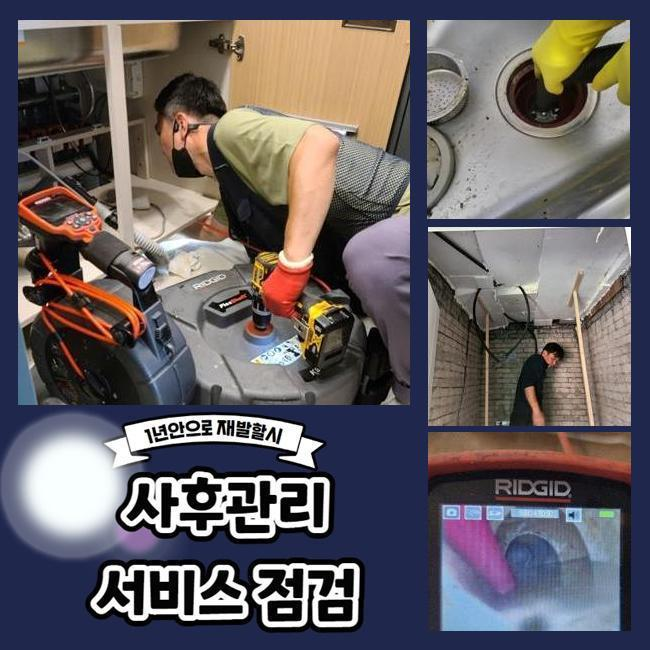
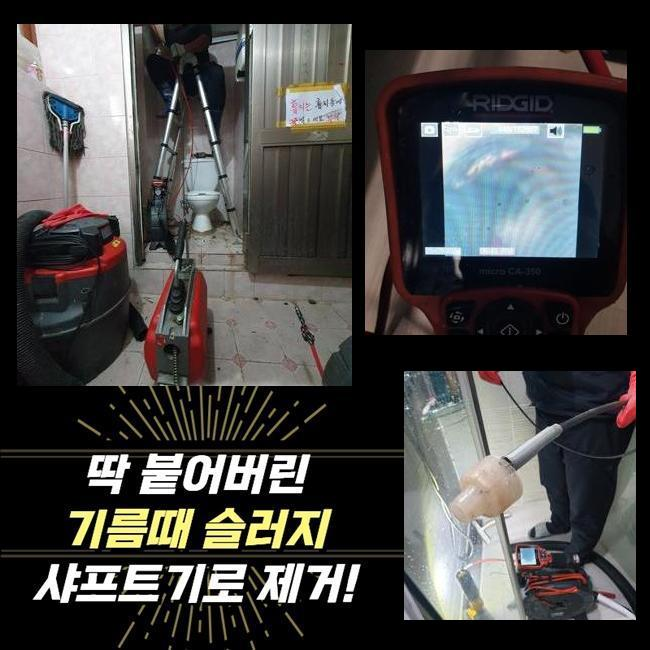
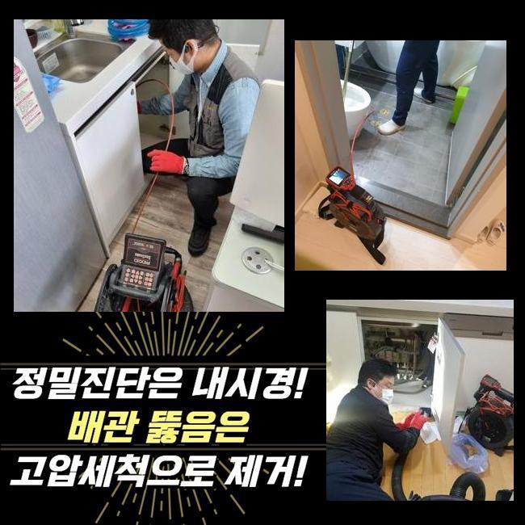
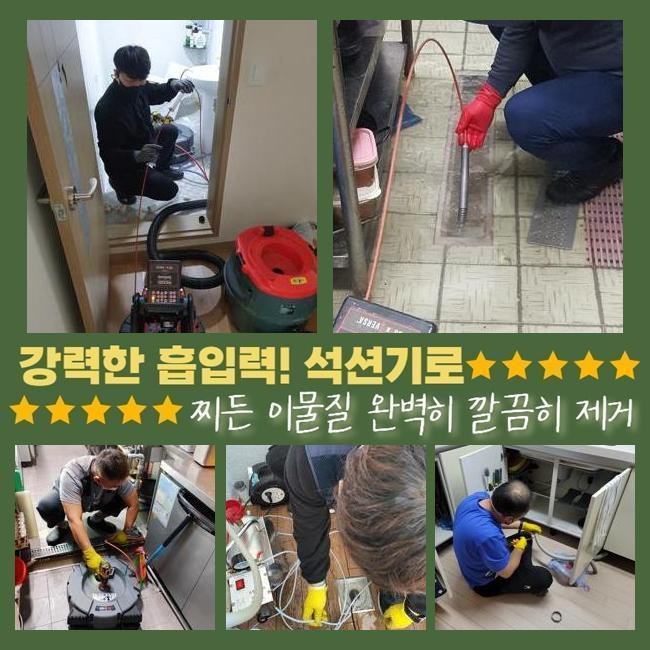
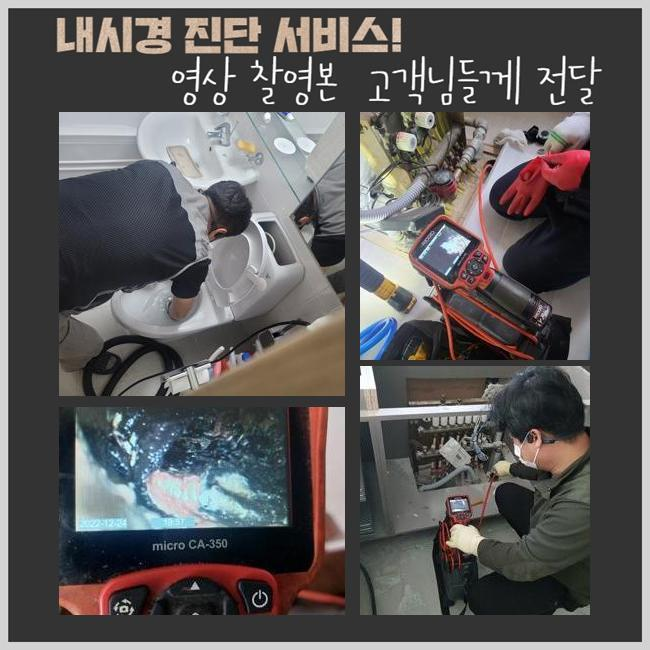
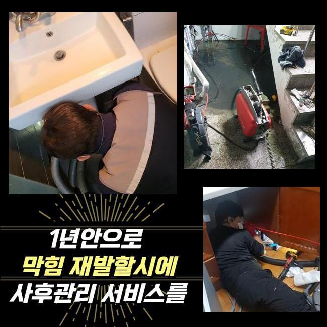

🏠 광주 장지동씽크대막힘 역동 하수구뚫는업체 해결방법
광주 장지동 싱크대막힘 전문 시공 후기

📋 작업 개요
- 위치: 광주 장지동, 장지동, 광주
- 서비스 유형: 싱크대막힘, 하수구막힘, 배관막힘, 누수수리, 역류해결, 뚫는업체, 배관청소, 고압세척, 설비공사, 악취차단
- 작업 일시: 2025. 1. 9. 17:14
- 업체명: 하수구수사대 (010-5615-2118)
🔍 문제 상황
광주 장지동씽크대막힘 역동 하수구뚫는업체 해결방법
금일엔 대형아파트 단지내에서 우수관 정체로 역류가 생긴다는 내용을 접수받았습니다
물기가 우수관쪽으로 흘러들어가지않고 도리어 넘쳐나서 환경이 지저분해지고 습기도 많아졌다 말씀하셨죠
2~3개월 이전에도 이와 동일한 현상을 목격한적이 있는데 장마기간이 끝난뒤에 더욱 악화된거라고 토로하셨죠
그것으로 근방에 냄새도 심해지고 주민분들의 불편함도 증가하게 되었던거죠
관리를 즉각 시행해달라고 요구하셨고 이에 저흰 지체없이 시공준비에 착수하였죠
장소를 찾아보니 멀지않은 곳에 존재하는 아파트였습니다
의뢰인분에게 즉시 고쳐드리겠다고 설명드리고 도구들을 챙긴뒤에 출발하게 되었어요
현장에 당도하니 분리수거장 근처에 우수배관이 있었어요
근처로 이동하니 물이 넘쳐흐른 자국이 많았고 근처로 이동하니 이를 치우기위한 빗자루 등이 마련되어 있더라고요
역류문제가 심화되면서 청소직원분이 상시로 그것들을 정리해나가셨다고 하십니다
그래도 정황은 나아지지 않았기에 신속한 정비를 바라셨던 거예요

🔎 원인 분석
💡 전문가 진단: 정밀 진단 장비를 사용하여 슬러지의 고착 여부를 판명하고 타격/세척 작업을 실시했습니다.
우수관로는 본래 낮은곳으로 우수가 모일수 있게끔 만들어져야 하지만 여긴 그런 부분이 제대로 반영되지 않은채 건설이 마감되어 역류문제가 증대되었어요
그부분을 처치하기 위해선 굴착업무가 요망되었으나 고객께서는 그 부분은 차후 정리하시겠다고 말하셨고 우선은 배수관클리닝을 요청설명해 주셨어요
우수설비의 막힘양상을 직접적으로 조사해보니 돌멩이들도 존재하였지만 일반 가정에서 버린 쓰레기들도 상당했어요
그로 인하여 우수배관이 막혔고 역류문제가 붉어질 때까지 정황이 악화된것이죠
이에 대해 가정내에서 우수관쪽으로 오물을 내려보낼수 있는지 확인해 보았는데요
저층세대의 베란다에서 활용하신다고 하네요
이러한 것들에 대해서 자주 자제를 요구하였지만 적절히 실행되지않는 상태였죠
그부분이 고쳐지지 않는다면 수리후 막힘상황이 다시 발현되기 쉽단걸 설명드렸으며 관계된 예방대책을 세우기고 하셨답니다
배수흐름을 진단하니 빗물이 정상으로 배출되지 못하고 있는게 즉각 목견되었죠
우수설비 주변으로 오염물질들이 너무 많아서 시공에 임하기 수월치 않았어요
게다가 관안에 보이는 슬러지도 많았고 크기도 커서 간단한 방책으로 처리하기엔 여의치 않았죠
그래서 저희들은 배관스프링 청소장비로 커다란 이물부터 처치하는 작업을 속행하기로 했습니다
시공할 장소가 좁았고 비까지 내려 공사가 수월치만은 않았답니다

🔧 작업 과정
이런 악조건에도 의뢰인의 고통을 최대한 감소시켜 드리려는 마음으로 곧바로 시공을 속행했어요
내시경카메라는 관로속을 관측하고 이물상태를 파악하는데 핵심이라고 볼수 있답니다
내시경을 통하여 디테일한 막힘상황을 명확하게 규명할수가 있으며 통수시간을 줄일수 있었어요
그리고 스프링관통기를 이용하여 관로를 청소하는 과정이 실행되었죠
작은크기의 우수관에는 배수망이 설치되지 않아서 찌꺼기들이 손쉽게 흘러드는 형국이 빈번하게 나타나죠
그러고나서 잔존물들이 누적되고 결과적으로 관로가 정체되어 역류증상이 발발하거나 해충들이 꼬일 가망성도 높아진답니다
이것을 사전에 차단하려면 종종 내부정비를 해야하며 잔재들이 못 들어가게끔 배수망을 두는일도 중요하죠
그런 사안들을 의뢰인께 말씀드렸고 또한 후미진 장소에 설치된 우수관로일수록 더더욱 주의를 기울여야한다는 것을 강조하였죠
뚫음을 시행할 때에도 배수관 내측에 금이 가지는 않았는지 누수증세가 생길 가망은 없는지 철저하게 진단했어요
이런 부분들로 인하여 예상치못한 문제점을 방예하고 거주자들의 편안을 만족시킬수 있어요
커다란 잔재들을 들어낸 다음에도 우수관 안쪽에는 아직까지 잔존물이 체류하고 있었죠
그부분을 해결하려 플렉스샤프트 기기를 사용하기로 했죠
샤프트장비는 강하게 돌아가는 체인으로 관로면에 접착된 슬러지들을 분쇄하는 용도로 강한 회전력을 바탕으로 효율적으로 이물들을 제거해나갈 수 있는데요
또 배수관을 파손하지 않기에 안심하고 쓸수 있는 특성이 있답니다
빗줄기가 멈춘다음 우수관주변의 이물들을 처치하려 석션기기를 통해 공사를 마쳤답니다
분쇄기기로 갈아냈던 찌꺼기들을 반복적으로 흡입기기로 청소하며 정체문제를 완벽하게 해결할수가 있었죠
의뢰인분의 괴로움을 최소화시키기 위하여 끝까지 열심을 다하여 업무였으며 파이프는 원래대로 유동성을 가진 모습으로 수리되었어요
이러한 시공을 바탕으로 정결한 배관을 유지해나가는 일이 어느정도로 중요한것인지 재차 인지시켜 드렸어요
배관이 막혀버리면 약소하게 불편함으로 마감되는게 아니고 한층 고약한 형국으로 연결될수 있어서 자주 세척하고 보존해나가야 한단걸 늘 강조드리고 있죠
특히나 이곳은 물빠지는 위치의 지대가 높아서 더더욱 세심하게 청소해야 한다는 것또한 알려드리게 되었죠


✅ 작업 완료
고객께서는 배관 내시경 이것으로 전제척인 우수관 모습을 즉각 보시게 되었고 시공을 마무리한 다음엔 많은양의 수돗물을 들이부어서 잘 뚫렸는지 시험했죠
이런식으로 단지내의 우수관로의 고장을 처리했고 역류증상까지 확실히 정리됐죠
관리가 힘든 우수관로나 기타 배관문제도 배관전문가를 찾아 철저히 관측하고 해결해나가시길 바랍니다
고객님들의 가정에 막힘이 생기지 않길 바라요
만일 이상현상이 발생하면 망설이지말고 전화해주세요 신속하게 이동하겠습니다




⚠️ 베란다 누수 및 방수 관리 방법
- ✅ 비가 많이 올 때 창틀 주변이나 아래층 천장에 얼룩이 생기는지 정기적으로 확인해 보세요.
- ✅ 우수관 주변 실리콘 마감이 들뜨거나 깨진 틈새가 있는지 손상 여부를 수시로 체크하세요.
- ✅ 베란다 바닥 타일의 줄눈(메지)이 소실되면 그 틈으로 물이 침투하여 누수가 유발됩니다.
- ✅ 누수 의심 증상 발견 시 방치하면 아래층 손실이 커지므로 즉시 전문가의 진단을 받으십시오.
💡 핵심 정리
- 확실한 장비 작업(내시경 점검 및 샤프트 스케일링)으로 원인을 뿌리 뽑습니다.
- 작업 후 1년 이내에 동일한 부위 재발 시 100% 무상 A/S 서비스를 보장합니다.
- 서울 · 경기 · 인천 전 지역에 24시간 언제든 긴급 출동할 수 있도록 항시 대기 중입니다.
❓ 자주 묻는 질문 (FAQ)
🚨 광주 장지동 싱크대막힘 문제로 고민이신가요?
정확한 원인 진단과 확실한 시공으로 재발 없는 해결을 약속드립니다.
24시간 긴급 출동 | 서울 · 경기 · 인천 전지역 | 1년 내 재발 시 무상 A/S